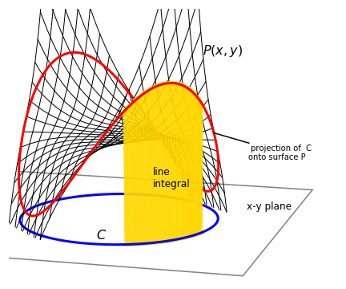

13 Line integrals¶
# import all python add-ons etc that will be needed later on
%matplotlib inline
import numpy as np
import matplotlib.pyplot as plt
from sympy import *
init_printing() # allows printing of SymPy results
plt.rcParams.update({'font.size': 16}) # set font size for plots
The integrals so far studied have the form \(\int f(x)dx\), which means that integration proceeds uniformly along the x-axis. Now suppose instead that we wish to integrate along some other direction, such as any curved line that is in the \(x-y\) plane. This is not as obscure as it may sound. When you ride a bike, the force needed to keep you moving will obviously vary depending on which way or how fast you want to go. Similarly, the amount of energy you consume getting from one place to another depends on the path taken such as walking around a hill instead of over the top. In thermodynamics, line or path integrals are very important and explain why some integrals are represented as the difference between starting and ending values while other integrals have to be evaluated explicitly.
Three things are needed to calculate a line integral:
(a) The path to be followed, \(C\).
(b) Its starting and ending points, \(A\) and \(B\).
(c) The ‘line’ or surface function itself, \(P(x, y)\).
The line is often a two-dimensional function of \(x\) and \(y\). A typical example would be to calculate the line integral of \(P(x, y) = x + y\) along a path or curve given by \(y = x^2/2\) from \(x = 0 \to = 2\). This is written in the form
The \(C\) subscript on the integral is the conventional notation to indicate a line integral, although, unfortunately, this is not usually used in thermodynamics. The integral \(\int(x + y)dx\) cannot be evaluated as it stands, because we do not yet know how \(y\) is related to \(x\) and integration is with respect to \(x\). The path taken determines the relationship between \(y\) and \(x\) and mathematically, this can take almost any form we choose. In practice, of course, the specific problem being studied will determine this relationship. Therefore integration of \(\int(x+y)dx\) could just as easily be over the path \(y=e^x\) from \(x=-2\to 2\) or \(y=\sin(3x)\) from \(0 \to \pi/2\) and so forth and consequently there is no limit to the number of examples that can be devised even with a single surface.
Figure 33 shows the path of a circle of radius 3 projected onto the surface \(P(x, y) = x^3y+xy^3+50\). The line integral is the curtain-like area between the lower circle \(C\) in the \(x-y\) plane and its projection hugging the surface. If this seems rather esoteric, consider instead a prosaic example of finding the weight of a piece of wire. This is path \(C\) (Figure 33). Now suppose that the wire has a weight that varies with its length and the weight changes as described by \(P(x, y)\). The total weight must be the integral along the length of the string each little element of which is accounted for in proportion to \(P\) by integrating. The weight at each point is the height of the line draped on \(P\) above the \(x-y\) plane as shown in Figure 33 and the whole weight is the area between curve \(C\) in the \(x-y\) plane and its projection on \(P\).

Figure 33. The surface \(P(x, y) = x^3y + xy^3 + 50\) with the curve (circle) \(C\), \(x^2 + y^2 = 3^2\). The red line is the path of the circle projected onto the surface; the circle is shown below in blue. The line integral is the yellow shaded curtain-like area shown between the circle and its projection onto the surface.
Returning to the original example, to calculate the integral is easier than it may seem. All that is necessary is to substitute \(y\) into the function \(P = x + y\) and integrate as normal. If the path \(C\) is \(y = x^2/2\) then
and if path \(C\) is \(y=e^x\) from \(x=-2\to 2\) then \(\displaystyle \int_C (x+y)dx=\int_{-2}^2(x+e^x)dx=e^2+\frac{1}{e^2}\).
More formally, the line \(P(x, y)\) is defined to be a surface or function of \(x\) and \(y\), and assumed to be single valued. \(C\) is the curve in the plane defined as \(y = f(x)\) going from points \(A = (x_1, y_1)\) to \(B = (x_2, y_2)\) as sketched in Figure 34. The integral could therefore be written as
which does make the integral look rather ordinary.
13.1 Definitions of some different forms of line integrals¶
Normal, i.e. continuous and single valued functions¶
The line integral of a surface \(P(x, y)\) with curve \(C \equiv f(x)\) and limits \(x_1 \to x_2\) is
A similar integral could be defined in terms of an integral in \(y\) instead of x; for example, if \(Q(x, y)\) is the line, then
but note that it is necessary to multiply by \(dy/dx\) and integrate in \(dx\).
Parametric forms¶
Parametric equations are very useful in defining complex curves; a circle of radius \(2\) about the origin has the form \(x^2 + y^2 = 2^2\) in Cartesian coordinates, and in parametric form, \(x = 2\cos(t), y = 2\sin(t)\); see Section 6. A curve defined in parametric form is written as \((x(t), y(t))\). Integration is obtained by substituting equation 78 for \(x\) and \(y\) in terms of \(t\) and integrating in \(t\),
If the line is again \(x + y\) and the integration is around the circle \(x = 2\cos(t), y = 2\sin(t)\), choosing limits from \(0 \to \pi\) gives
Using Sympy to do the integral gives
t=symbols('t',positive=True)
eq = cos(t)*sin(t)
integrate(eq,t)
eq = sin(t)**2
integrate(eq,t)

Figure 34 (Left) & 35. Right. A line integral is made along curve \(C\). Right. Calculating a small length of a curve \(\delta s\)s.
13.3 Arc length on a surface \(P(x,y)\)¶
Suppose that the length of a small section of the curve \(C\) is \(ds\) then a line integral can be defined in terms of this arc length. See the sketch, Fig. 4.35,
By Pythagoras’s theorem, \(\delta s^2 = \delta x^2 + \delta y^2\), rearranging and taking the limit to form the differential gives \(\displaystyle \frac{ds}{dx}=\sqrt{1+\left( \frac{dy}{dx} \right)^2}\) which produces the result for the arc length \(S\),
where \(y = f (x)\).
Suppose that the surface is \(P(x, y) = x + y\) then the arc length from \(x = 0 \to 4\) along a curve \(C\) that we choose to be the parabola \(y=1+x^2\) is
If the equation is in parametric form then \(ds/dt\) is used instead of \(ds/dx\) in equation 82 where \(\displaystyle \frac{ds}{dt}=\sqrt{\left(\frac{dx}{dt}\right)^2 +\left(\frac{dy}{dt}\right)^2}\).
13.4 Length of a curve¶
When only the length of a curve \(C\) is required, all that is necessary is to make \(P(x, y) = 1\) but still use the equation of the curve to define \(dy/dx\);
As an example, consider finding the length of the curve of the same parabola and limits as in Section 13.3. The integral is \(\displaystyle S=\int_C ds=\int_{x_1}^{x_2} \frac{ds}{dx}dx=\int_0^4\sqrt{1+4x^2}dx = \frac{x\sqrt{1+4x^2}}{2}+\frac{1}{4}\sinh^{-1}(2x)\bigg|_0^4 \approx 16.8\)
If a curve is defined in plane polar coordinates, the arc length is
which after substituting for \(x\) and \(y\) becomes
The Archimedian spiral has the form \(r=a\theta\) where \(a\) is a constant. The length of this curve is \(\displaystyle \int_0^\theta \sqrt{1+\theta^2}d\theta\) over angles \(\theta=0\to\theta\). Using Sympy produces \(\displaystyle S=\frac{a}{2}\left(\theta\sqrt{1+\theta^2}+\sinh^{-1}(\theta)\right)\)
theta=symbols('theta',positive=True)
eq=sqrt(1+theta**2)
integrate(eq, theta)
13.5 A surface defined by two functions¶
Suppose that the surface is represented by two functions \(M\) and \(N\), which is often the case in thermodynamics, then the line integral can be written as two integrals in \(dx\) and \(dy\),
As an example, the integral
will be calculated over the upper half of the semicircle of a unit disc. The curve \(C\) is therefore the equation of a unit circle, \(x^2 + y^2 = 1\), and the integration proceeds from \((1, 0) \to (-1, 0)\), which is from the positive x-axis anticlockwise to the negative x-axis. The integral is, with the derivative in brackets,
13.6 Path independent integrals and State functions¶
As an example of an integral that is independent of the path, consider calculating the integral \(\int_C xdx + ydy\) first along the sinusoidal path \(y = \sin(x)\) and then along the straight path \(y = 2x/\pi\) both from \((0, 0) \to (0, \pi/2)\). Using equation 85 the first curve produces
and the second
which is the same result. Therefore, this integral is independent of the path provided both paths pass through the same end points.
There are clearly many other curves that pass through the points \((0, 0) \to (0, \pi/2)\) and all of these will return the same value of the integral.
The surface \(x + y\) would be called a state function if \(x\) and \(y\) had a meaning in thermodynamics. The value of a state function only depends on the starting and ending conditions and not on the means of getting from one to the other. The condition for the integral \(f = \int M(x, y)dx + N(x, y)dy\) to depend only on its end-points is
a relationship which has been met before in the discussion on partial derivatives; see Chapter 3.12.
Figure 36. The integral of a state function is independent of path and depends only on starting and ending positions \(A\) and \(B\).
14 Path integrals in Chemical Thermodynamics¶
In thermodynamics, all the integrals you are likely to meet are line functions in 8-dimensional space - not a very appealing thought. Thermodynamics can consequently appear to be so very complicated because the choice of variables is so very large. Normally, ‘natural’ variables are chosen depending upon which can easily be measured, usually these are \(p, V\) and \(T\). However, any two independent variables can be chosen from the eight state functions \(p, V, A, T, H, U, G, S\).
The first law, which is a law of the conservation of energy, states that the heat gained by a system \(q\) and the work done on the system \(w\), define the change in internal energy \(\Delta U\)% as
or in differential form
The \(\delta\) notation reminds us that \(q\) and \(w\) are not state functions but depend on the path. The integral therefore has to be performed as per normal and not obtained from the difference in starting and ending values, as is the case for a state function such as \(U\). The \(\delta\) notation also means that \(q\) and \(w\) are not perfect differentials and are calculated by path integrals. Other authors just use \(dU = dq + dw\) and leave it for you to decide which the perfect differentials are.
Recall that heat is energy in motion which means energy is being transported from one system to another and only occurs when there is a difference in temperature. Work means a gas is expanded with a volume change of \(\Delta V\) against an external pressure \(p\). Suppose the heat absorbed on expansion of a gas is taken to be a function of internal energy \(U\) that changes from \(U_0 \to U_1\) and volume \(V\) that changes from \(V_0 \to V_1\). Since \(U\) is a state function and work is not, integrating \(q = \int dq = \int dU - \int dw\) and replacing work with \(dw = -pdV\) gives
It is implied by choosing \(U\) and \(V\) that \(p\) is a function of both, i.e. \(p(U, V )\), but it is never written like that, it is assumed and you have, therefore, to understand what \(p\) is a function of.
In a general thermodynamic system, it is unknown how the pressure depends on both the volume and internal energy, and how they vary along the path chosen. Therefore, the integral cannot be evaluated unless these relationships can be found. If the ideal gas law or van der Waals equation applies, then the relationship between \(p\) and \(V\) is known and the work integral can be calculated.
Suppose now that \(T\) and \(V\) are chosen as independent variables, instead of \(p\) and \(V\). By definition, the heat capacity is the gradient of the heat vs temperature and if constant volume applies it is called \(C_V\) where the heat is replaced by the internal energy as no work can be done, \(\displaystyle C_V=\left( \frac{\partial U}{\partial T} \right)_V \) then \(\int dU=\int C_V dT\) and the heat change \(q=\int dq=\int dU-\int dw\) becomes
This can be evaluated because the heat capacity and change of pressure with temperature and volume can be measured. Similarly, if \(p\) and \(V\) are the independent variables, then
The constant pressure heat capacity is defined as \(\displaystyle C_p=\left( \frac{\partial H}{\partial T} \right)_p \) where \(H=U+pV \) is the enthalpy, internal energy plus work. If an ideal gas expansion is carried out at constant pressure, then the first term in the integration is zero; and the second term is zero if carried out at constant volume; if neither is the case then the path equation must be known and \(dV/dp\) calculated to make the integral one in \(p\) or \(V\) alone.
As an example of a thermodynamic calculation, consider calculating the entropy \(S\), which is a state function and can be defined as
and in an integrated form
if variables \(T\) and \(p\) are chosen. It has been stated that \(S\) is a state function: to prove that this is true, equation 87 must hold true for the derivatives in equation 88. To illustrate this, it will be necessary to relate \(T, V\), and \(p\) and for which the ideal gas equation will be used. The first step is to form equation 87, which is done by looking at the ‘symmetry’ of the first of equations 85, \(Mdx + Ndy\) and comparing it with 87, \(\displaystyle \frac{\partial N}{\partial x} = \frac{\partial M}{\partial y}\). In this equation \(M\) is a derivative with respect to \(y\), and \(N\) to \(x\). Therefore, choosing \(M = C_p /T\) and \(N = (\partial V/\partial T)_P\) these must be functions of the other variable used in equation 88 or 89. This means that equation 87 becomes
Next, it is shown that this relationship is true. As the ideal gas law is \(pV = RT\) then \((\partial V/\partial T)_p = R/p\) and so
The heat capacity is by definition, \((dU/dT)_p\) making the left-hand side of equation 91
because the internal energy \(U\) of an ideal gas depends only on the temperature. The right-hand side of equation 91 is also zero because \(\displaystyle \frac{\partial }{\partial T}\left( \frac{R}{p}\right)=0\), verifying that \(S\) is a state function.
14.1 State functions do not depend on the path¶
To show that \(S\) does not depend on the path, the entropy, \(S\), of 1 mole of an ideal gas, expanded reversibly, will be calculated using equation 89. The starting pressure and temperature are \((p_0, T_0)\) (point A, Fig. 36) and ending \((p_1, T_1)\) (point B) and the calculation follows each of the two paths shown in (a) lines \(C_1 + C_2\) and (b) line \(C_3\). The heat capacity is treated as a constant over the range \(p_0\to p_1\).
Path (a) consists of two straight lines \(C_1\) and \(C_2\) at right angles to one another. \(C_1\) is the path \(P_0 \to P_1\) at \(T_0\), then \(C_2\) from \(T_0 \to T_1\) at \(P_1\) and path (b) is along a straight line \(C_3\) from start to finish.
The method to follow is to:
(1) Substitute for any partial derivatives using (in this example) the ideal gas law to make an equation in \(p\) or \(T\) as necessary.
(2) Use equation 85 to make equations in \(dp\) and\( dT\).
(3) Work out the remaining derivative \(dp/dT\) or \(dT/dp\) depending on the path taken.
(4) Integrate the resulting equation.
In step (1), starting with equation 89, substituting the partial derivative using the ideal gas law produces
Step (2): making the integral a function of \(p\) and of \(T\) alone gives
as illustrated in equation 85.
Steps (3) and (4): The first part of the path (a) is at constant \(T=T_0\), and from \(p_0 \to p_1\), therefore as \(dT/dp=0\)
This is also obvious because \(T\) is constant along this part of path (a) and equation 92 could have been used directly. In the second step at constant \(p_1\) with the temperature changing from \(T_0 \to T_1\),
and the total change in entropy is the sum of these last two integrals.
The same method is used for path (b) along the line \(C_3\). As this path goes directly from start to finish it is the equation of a straight line; \(\displaystyle T= \frac{T_1-T_0}{p_1-p_0}(p-p_0)+T_0\) with gradient \(\displaystyle \frac{dT}{dp}=\frac{T_1-T_0}{p_1-p_0}=m\) and substituting this and \(T\) into the equation for \(S_T\) and integrating gives
which is the same as along the path (a); therefore entropy is a state function. (The first part of the last integration is a standard one: \(\int dx/(ax + b) = \ln(ax + b)/a\)).
14.2 Green’s function¶
A line integral of two functions is by Green’s theorem equal to the surface integral around a closed area, or
where integration is taken in an anticlockwise direction. It can be evaluated either as two or more line integrals, one for each part of the loop, or from the double integral depending which is easier, but is always around a closed area. The notation for this is often given as \(\int_C Mdx + Ndy\) . If the curve is given para metrically, the integral is \(\displaystyle A= \frac{1}{2}\int \left( x\frac{N}{dt}-y\frac{M}{dt} \right)dt\).
Consider equation 86, which was evaluated around the semicircle of a unit circle from \(A\) to \(B\). The result was \(\displaystyle \int_Cy^2dx+2x^2ydy=-\frac{4}{3}\).
The second part of the calculation of the closed loop must also contain the line integral from \(B\) to \(A\), the curve for this is \(y = 0\) and therefore the integral \(B \to A\) is zero because \(y\) is zero, in both limits of the integral. The total line integral from \(A \to B\) then straight to \(A\) again is therefore also \(-4/3\).
Now consider the Green’s function integral, equation 93 with \(M \equiv y^2\) and \(N \equiv 2x^2y\) then
and note the change of order of integration in the second line which ensures that an integral in \(x\) with constants as limits is the final integration. The result is the same that obtained before.
Figure 37. Integrating around the curve \(A \to B \to A\).